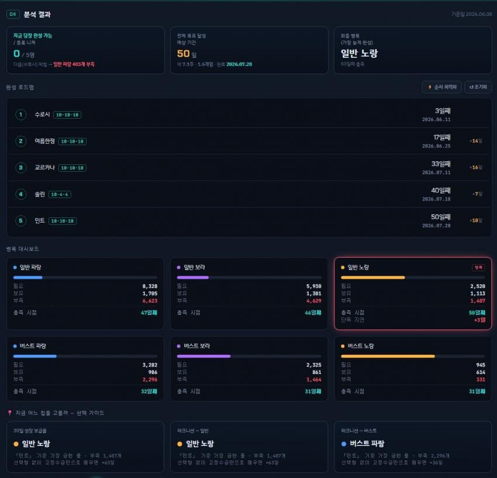
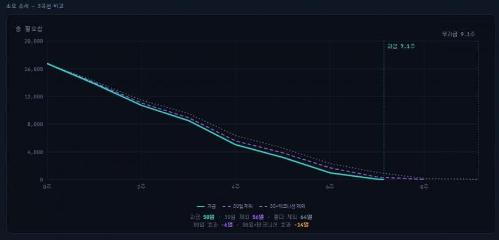

스킬칩이 썩어넘쳐나는 할배들은 필요없지만, 여름/주년/신년 등을 위해 스킬칩 한두달씩 열심히 모았다가 쓰는 뉴비들을 위한 플래너임.
안타깝게도 뉴비에게 스킬칩 이상으로 부족한 속성칩은 고려하지 못했음.
(기댓값의 영역이라,,,,)
더불어 과금요소는 30일 보급품(23,000원) 및 주간 스킬칩(30,000원)만 반영되어 있음. 이 이상 스킬칩에 과금하는 사람은 돈통이라는 뜻이니 이런거 필요없음.
기능 설명
0. 배너보기를 누르면 시프티가 나옴.
1. 보유 스킬칩 : 본인이 보유한 스킬칩 입력
2. 육성 니케 등록
(1) 본인이 육성하고자 하는 니케와 현재/목표 스킬 단계 입력
(2) 1번부터 우선순위이므로 우선순위 조정하셈(후술할 내용과 연관)
3. 수급 설정
(1) 상술한 과금요소 토글 ON/OFF
(2) 이벤트 캘린더 등록 (2주/3주 나눴으며 본인이 마지막으로 등록한 이벤트 기간 이후로는 2주 간격으로 자동 계산됨 // 현재 6월 11일 3주 이벤트 초기 등록 상태)
4. 분석 결과
(1) 보유 스킬칩 기준 당장 목표만큼 육성 가능한 니케 수 / 전체 육성 완료 예상 소요일 / 최종병목 스킬칩
(2) 완성 로드맵 (본인이 위 과금요소에 손댄다면 순서 최적화 기능을 통하여, 보유스킬칩+과금요소+우선순위에 근거하여 가장 빠르게 목표 육성을 달성할 수 있도록 최적화)
(3) 병목 대시보드 (각 스킬칩별로 목표 육성을 위하여 필요한 개수와 일수 및 병목 스킬칩 표시)
(4) 과금요소에서 스킬칩 선택 가이드 (가급적 가장 후순위를 누를 것)
(5) 소요 추세 (총 필요칩 소요량 추세곡선 및 과금/과금X 소요일수 비교)
(6) 총 소요 스킬칩 수
비개발자가 클로드 토큰 갈아가면서 만든거라 기능, ui(특히 모바일) 측면에서 굉장히 허접할거임. 그냥 필요한 사람들은 대충대충 써보삼.
혹시라도 추가적으로 필요한 기능이 있다면 댓글로 적어주면 한번 반영해보겠음.
-----------예시 이미지------------------
-----------예시 이미지------------------

